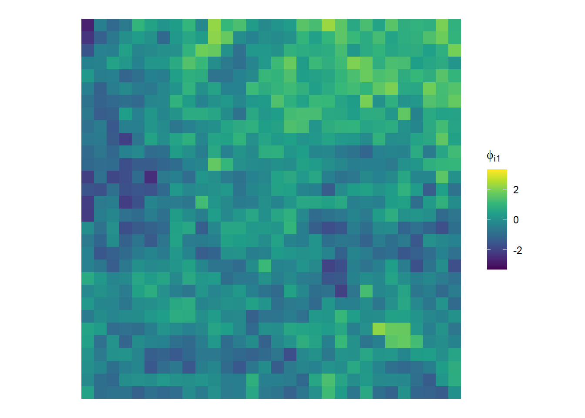
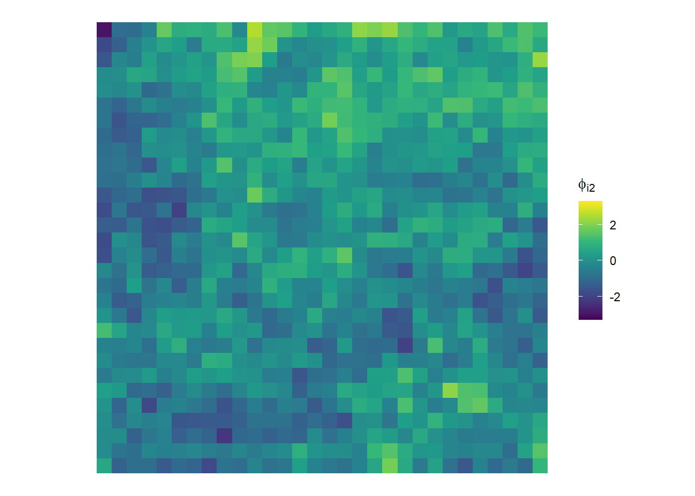

Code: Load the packages
library(tidyverse)
library(igraph)
library(viridis)March 5, 2023
Here we will extend the univariate CAR model to the multivariate case.
Consider a spatial domain \(\mathcal{D} \in \mathbb{R}^2\) that is partitioned into \(n\) areal units. The structure of the spatial domain is captured in the neighborhood matrix. Recall our definition of a neighborhood matrix \(\mathbf{W} = \{w_{ij}\}\), where \[ w_{ij} = \begin{cases} 1 \quad \text{if} \quad j \in \mathcal{N}(i),\\ 0 \quad \text{otherwise}. \end{cases} \] and by convention \(w_{ii}=0\). Further, define \(w_{i+} = \sum_{j=1}^pw_{ij}\), i.e. the number of neighbors of location \(i\), \(|\mathcal{N}(i)|\).
In the univariate case we specified a spatial random effect \(\boldsymbol\phi = (\phi_1,\dots,\phi_n)\) meant to characterize spatial dependence. In the multivariate case, say of dimension \(p\), we specify a \(p \times 1\) spatial random vector \(\boldsymbol\phi_i = (\phi_{i1}, \phi_{i2},\dots, \phi_{ip})\) at each location \(i\), \(i = 1,\dots,n\). Arrange these vectors as rows in a matrix \(\boldsymbol\Phi\) \[ \boldsymbol\Phi = \begin{pmatrix} \boldsymbol\phi_{1}\\ \boldsymbol\phi_2\\ \vdots\\ \boldsymbol\phi_n \end{pmatrix} = \begin{pmatrix} \phi_{11} & \phi_{12} & \dots & \phi_{1p}\\ \phi_{21} & \phi_{22} & \dots & \phi_{2p}\\ \vdots & \vdots & \ddots & \vdots\\ \phi_{n1} & \phi_{n2} & \dots & \phi_{np}\\ \end{pmatrix}. \]
Define \(\boldsymbol\phi' = \text{vec}(\boldsymbol\Phi^T)\), i.e. stacked columns of \(\boldsymbol\Phi^T\). Here we will use \(\boldsymbol\phi' = \text{vec}(\boldsymbol\Phi^T)\) to characterize spatial dependence.
We concern ourselves with the joint distribution \(\boldsymbol\phi'\) by specifying conditional distributions of \(\boldsymbol\phi_i\). Under the Markov Random Field (MRF) assumption, the conditional distributions of \(\boldsymbol\phi_i\) can be specified as \[ p(\boldsymbol\phi_i|\boldsymbol\phi_{j\ne i}, \boldsymbol\Gamma_i) = N\left(\sum_{i \sim j} \mathbf{B}_{ij}\boldsymbol\phi_j, \boldsymbol\Gamma_i\right), \quad i,j = 1,\dots,n. \]
where \(\boldsymbol\Gamma_i\) and \(\mathbf{B}_{ij}\) are \(p \times p\) matrices. Here we use \(i \sim j\) to say that \(j\) is in the neighborhood of \(i\), i.e. \(j \in \mathcal{N}(i)\).
The role of \(\boldsymbol\Gamma_i\) and \(\mathbf{B}_{ij}\) are analogous to the roles of \(\tau_i^2\) and \(b_{ij}\), respectively, in the univariate CAR models. The matrix \(\boldsymbol\Gamma_i\) is the within-location covariance matrix which describes the dependence of the variables in the vector \(\boldsymbol\phi_i\). The matrix \(\mathbf{B}_{ij}\) is a matrix that allows us to weight observations from locations in the neighborhood of location \(i\). A convenient special case is to set \(\mathbf{B}_{ij} = b_{ij}\mathbf{I}_p\) where \(b_{ij} = w_{ij}/w_{i+}\), i.e. the neighboring observations are equally weighted.
Specifying the conditional distributions in this way implies the unique joint distribution, via Brook’s Lemma, to be \[ p(\boldsymbol\phi' \;| \;\{\boldsymbol\Gamma_i\}) \propto \exp\left\{-\frac{1}{2}\boldsymbol\phi^T\boldsymbol\Gamma^{-1}(\mathbf{I}_{np} - \tilde{\mathbf{B}})\phi\right\} \] where \(\boldsymbol\Gamma\) is block-diagonal with block \(\boldsymbol\Gamma_i\), and \(\tilde{\mathbf{B}}\) is \(np \times np\) with the \((i,j)\)-th block \(\mathbf{B}_{ij}\).
Of course, the conditions for a proper multivariate normal distribution are symmetry and positive definiteness of \(\boldsymbol\Gamma^{-1}(\mathbf{I}_{np} - \tilde{\mathbf{B}})\).
Setting \(\mathbf{B}_{ij} = b_{ij}\mathbf{I}_p\) where \(b_{ij} = w_{ij}/w_{i+}\) leads to the symmetry condition \(b_{ij}\boldsymbol\Gamma_j = b_{ji}\boldsymbol\Gamma_i\).
Further, a common simplifying assumption would be to consider equal within-location covariance. That is, set \(\boldsymbol\Gamma_i = w_{i+}^{-1}\boldsymbol\Lambda\) where \(\boldsymbol\Lambda\) is the \(p \times p\) within-location covariance matrix for \(\boldsymbol\phi_i\) common across spatial locations \(i=1,\dots,n\).
Under these assumptions we can write \(\boldsymbol\Gamma = (\mathbf{D}^{-1}\otimes\boldsymbol\Lambda)\) where \(\mathbf{D}\) is an \(n \times n\) diagonal matrix with \(\mathbf{D}_{ii} = w_{i+}\). And also \(\tilde{\mathbf{B}} = \mathbf{B}\otimes\mathbf{I}_p\) where \(\mathbf{B}\) is a \(n \times n\) matrix and elements of \(\mathbf{B}\) are \(\mathbf{B} = \{b_{ij}\} = \{w_{ij}/w_{i+}\}\), not to be confused with the block matrix specification \(\mathbf{B}_{ij}\) given previously.
With this in mind, we can write the precision of the above joint distribution in an alternate form,
\[\begin{align*} \Gamma^{-1}(\mathbf{I}_{np} - \tilde{\mathbf{B}}) &= (\mathbf{D}^{-1} \otimes \boldsymbol\Lambda)^{-1}(\mathbf{I}_{np} - \mathbf{B}\otimes \mathbf{I}_p)\\ &= (\mathbf{D} \otimes \boldsymbol\Lambda^{-1})(\mathbf{I}_{np} - \mathbf{B}\otimes \mathbf{I}_p) & \text{Kronecker Prod - Inverse}\\ &= (\mathbf{D} \otimes \boldsymbol\Lambda^{-1}) - (\mathbf{D} \otimes \boldsymbol\Lambda^{-1})( \mathbf{B}\otimes \mathbf{I}_p) & \text{(Matrix Mult - distributive wrt matrix addition)}\\ &= (\mathbf{D} \otimes \boldsymbol\Lambda^{-1}) - (\mathbf{D}\mathbf{B}) \otimes (\boldsymbol\Lambda^{-1}\mathbf{I}_p) & \text{(Kronecker Prod - mixed-product property)}\\ &= (\mathbf{D} - \mathbf{D}\mathbf{B})\otimes\boldsymbol\Lambda^{-1} & \text{(Kronecker Prod - distributive wrt matrix addition)}\\ &= (\mathbf{D} - \mathbf{W}) \otimes \boldsymbol\Lambda^{-1} \end{align*}\]
where the last step follows from the fact that \(\mathbf{B} = \mathbf{D}^{-1}\mathbf{W}\).
Now there is no need to construct a large block-diagonal \(\boldsymbol\Gamma\) matrix. Also, the neighborhood matrix \(\mathbf{W}\) and \(\mathbf{D}\), the diagonal matrix of its row sums, are fixed and known quantities easily computed outside of any MCMC sampling loop. The joint distribution is then
\[ p(\boldsymbol\phi' \;| \boldsymbol\Lambda) \propto \exp\left\{-\frac{1}{2}\boldsymbol\phi^T\left((\mathbf{D} - \mathbf{W})\otimes \boldsymbol\Lambda^{-1}\right)\phi\right\} \] or \[ \boldsymbol\phi'|\boldsymbol\Lambda \sim N\left(\boldsymbol 0, (\mathbf{D} - \mathbf{W})^{-1} \otimes \boldsymbol\Lambda\right). \]
However, we again encounter the issue that \((\mathbf{D} - \mathbf{W}) \otimes \boldsymbol\Lambda^{-1}\) is singular, since \((\mathbf{D} - \mathbf{W})\) is singular. This motivates the introduction of a scalar “spatial strength” parameter, \(\rho\), also analogous to the univariate case. There are in fact more general conditions for recovering positive definiteness, but these are not explored here. More details can be found in. . .
Introducing \(\rho\) results in a proper joint distribution with form
\[ p(\boldsymbol\phi' \;| \boldsymbol\Lambda) \propto \exp\left\{-\frac{1}{2}\boldsymbol\phi^T\left((\mathbf{D} - \rho\mathbf{W})\otimes \boldsymbol\Lambda^{-1}\right)\boldsymbol\phi\right\} \] provided that \(|\rho|<1\).
This model is denoted as \(\text{MCAR}(\rho,\Lambda)\).
Let’s simulate a simple scenario. Let the spatial domain be partitioned into a \(40 \times 40\) regular lattice with \(n = 1600\) spatial locations. The regular lattice partition will induce a neighborhood matrix \(\mathbf{W}\) and diagonal matrix \(\mathbf{D}\) for the row sums of \(\mathbf{W}\).
Let \(p = 2\) so that we have a \(p \times 1\) vector \(\boldsymbol\phi_i\) at each location \(i = 1,\dots,n\). Next, specify the common within-location covariance matrix \[ \boldsymbol\Lambda = \begin{pmatrix} 1 & 0.9\\ 0.9 & 1 \end{pmatrix} \] This way \(\text{Var}(\phi_{i1}) = 1\), \(\text{Var}(\phi_{i2}) = 1\), and \(\text{Corr}(\phi_{i1}, \phi_{i2}) = 0.9\). Lastly, set \(\rho = 0.99\) to induce strong spatial correlation. Here is a naive way to sample from the joint distribution for \(\boldsymbol\phi'\). It is naive because it does not take advantage of the sparsity of the precision matrix. We leave computational advantages to a later investigation.
set.seed(831)
# specify spatial domain
n <- 40^2
spat_domain <- expand.grid(x = 1:sqrt(n), y = 1:sqrt(n))
spat_domain$label <- 1:n
spat_domain_g <- make_lattice(c(sqrt(n),sqrt(n)), mutual = TRUE)
W <- as_adjacency_matrix(spat_domain_g, sparse=0)
D <- diag(rowSums(W))
# specify parameters
p <- 2
Lambda <- matrix(c(1, 0.9,
0.9, 1), byrow = T, ncol = p)
rho <- 0.99
# construct precision matrix for join dist of phi
inv_Sigma <- kronecker((D-rho*W), solve(Lambda))
# sample from joint dist of phi (technique borrowed for precision matrices)
spat_phi <- backsolve(chol(inv_Sigma), rnorm(n*p))
# inverse vectorize phi
spat_phi <- matrix(spat_phi, byrow = T, ncol = p)
# assign values to spatial data set
spat_domain$phi1 <- spat_phi[,1]
spat_domain$phi2 <- spat_phi[,2]Since we specified this example with both strong spatial and strong within-location correlation, plotting the data for \(\phi_{i1}\) and \(\phi_{i2}\), we should expect to observe the same spatial correlation patterns for the first and second elements of \(\boldsymbol\phi_i\).


Good news! It looks like we were successful in simulating from the MCAR model! For the next post, we will examine the case where \(\rho\) is not shared among elements of \(\boldsymbol\phi_i\)